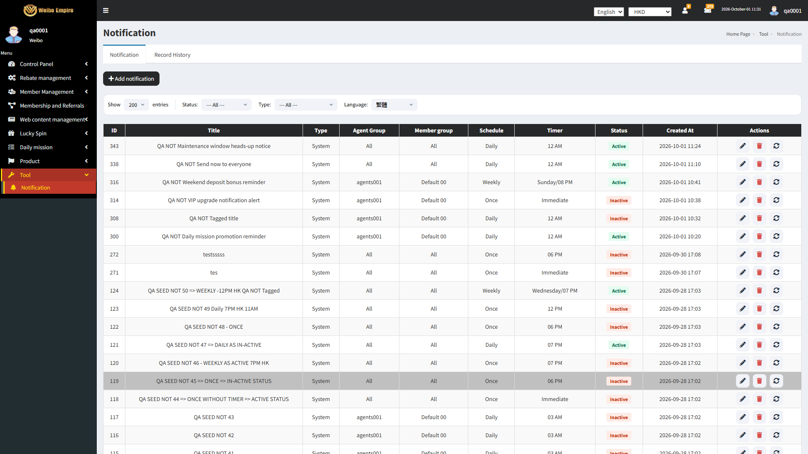
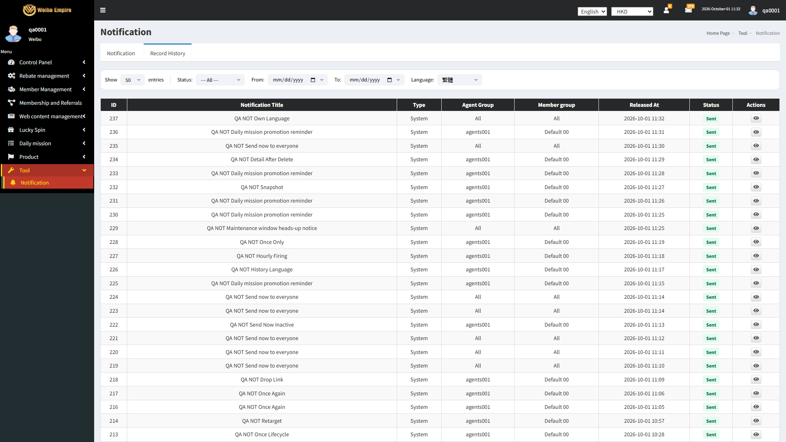
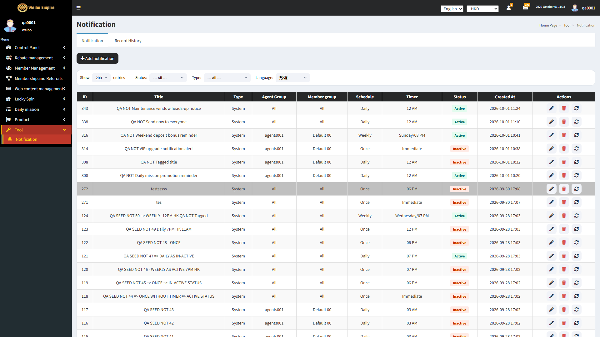

NOT-I18N-001
Details twelveTabsEverywherecreates-data
Logged in to the Weibo merchant admin back-office as Super Admin/Admin with access to Tool > Notification. On the Add Notification screen.
Count and read the label of every language tab on Add Notification. Repeat on the Record History Detail view. The 12 supported languages. Used in this run
After Send Now = SentRecord Details tabs = [繁體, 简体, English, 日語, ภาษาไทย, Vietnam, Spain, Malaysia, Indonesia, Filipino, Bengali, Portuguese]All 12 language tabs are present, labeled, and selectable everywhere content is shown
The application behaved as expected.123 events recorded, ended on https://admin-test.1083.city/tools/notification-record-detail?id=236
Pass 38.23s
Creates data. Side effects reach outside the browser — a real account, a real SMS, a filed deposit, a withdrawal hold or a staked balance — so it is kept out of unattended runs and must be run attended.
The case
Case id NOT-I18N-001
Method NotificationTest#twelveTabsEverywhere
Group 9. Localization (Localization)
Pre-condition Logged in to the Weibo merchant admin back-office as Super Admin/Admin with access to Tool > Notification. On the Add Notification screen.
Expected result All 12 language tabs are present, labeled, and selectable everywhere content is shown
Tags creates-data
Outcome Pass in 38.23s
The result
Verdict Every assertion in the case held.
Verified All 12 language tabs are present, labeled, and selectable everywhere content is shown
Duration 38.23 seconds
The steps below are the run's own record of how the case reached that verdict, and the Evidence column shows the page it finished on.
What the run did (123 recorded events)
0.00s STEP Case started: NOT-I18N-001: All 12 language tabs are present, labeled, and selectable everywhere content is shown 0.00s STEP Clicking + Add notification. 0.13s API GET api/account/inbox-notification-rule?page=1&paginate=200¤cy=HKD -> 200 0.24s API POST cdn-cgi/rum? -> 204 0.24s API POST cdn-cgi/rum? -> 204 0.39s API GET api/lang?currency=HKD -> 200 0.41s API GET api/account/member_group?no_paginate=true¤cy=HKD -> 200 0.70s API GET api/account/agent?no_paginate=true&status=1¤cy=HKD -> 200 1.89s API GET api/account/system_info?currency=HKD -> 200 5.63s STEP Clicking Cancel. 5.72s API POST cdn-cgi/rum? -> 204 5.72s API POST cdn-cgi/rum? -> 204 5.94s API GET api/lang?currency=HKD -> 200 5.94s API GET api/account/inbox-notification-record?whereRange[sent_at][from]=&whereRange[sent_at][to]=&page=1&paginate=50¤cy=HKD -> 200 5.95s API GET api/account/member_group?no_paginate=true¤cy=HKD -> 200 5.99s API GET api/account/inbox-notification-rule?page=1&paginate=200¤cy=HKD -> 200 6.32s API GET api/account/agent?no_paginate=true&status=1¤cy=HKD -> 200 6.72s STEP Opening Tool > Notification. 6.73s API GET tools/notification -> 301 6.73s API GET http://admin-test.1083.city/tools/notification/ -> 301 6.73s API GET tools/notification/ -> 200 6.74s API GET https://static.cloudflareinsights.com/beacon.min.js/v31edd6df95cf4e85bb4c19e7a9bdbcba1788362987495 -> 200 6.82s API GET https://fonts.googleapis.com/css?family=Source+Sans+Pro:300,400,600,700,300italic,400italic,600italic -> 200 7.08s NAV Loaded tools/notification/ 7.14s API POST cdn-cgi/rum? -> 204 7.25s API GET api/account/user-profile -> 200 7.31s API POST cdn-cgi/rum? -> 204 7.31s API POST cdn-cgi/rum? -> 204 7.31s API POST cdn-cgi/rum? -> 204 7.32s API POST cdn-cgi/rum? -> 204 7.49s API GET api/app-info?currency=HKD -> 200 7.54s API GET api/account/allow-menu?currency=HKD -> 200 7.69s API GET api/account/member_group?no_paginate=true¤cy=HKD -> 200 7.73s API GET api/lang?currency=HKD -> 200 7.76s API GET api/account/inbox-notification-record?whereRange[sent_at][from]=&whereRange[sent_at][to]=&page=1&paginate=50¤cy=HKD -> 200 7.78s API GET api/account/phone-countries?currency=HKD -> 200 7.82s API GET api/account/inbox-notification-rule?page=1&paginate=50¤cy=HKD -> 200 8.10s API GET api/account/agent?no_paginate=true&status=1¤cy=HKD -> 200 8.58s STEP Setting the Status filter to --- All ---. 8.83s API GET api/account/inbox-notification-rule?page=1&paginate=50¤cy=HKD -> 200 9.83s STEP Showing 200 entries per page. 11.10s API GET api/account/inbox-notification-rule?page=1&paginate=200¤cy=HKD -> 200 12.78s API GET api/account/system_info?currency=HKD -> 200 15.72s STEP Opening Tool > Notification. 15.73s API GET tools/notification -> 301 15.73s API GET http://admin-test.1083.city/tools/notification/ -> 301 15.73s API GET tools/notification/ -> 200 15.74s API GET https://static.cloudflareinsights.com/beacon.min.js/v31edd6df95cf4e85bb4c19e7a9bdbcba1788362987495 -> 200 15.85s API GET https://fonts.googleapis.com/css?family=Source+Sans+Pro:300,400,600,700,300italic,400italic,600italic -> 200 16.03s NAV Loaded tools/notification/ 16.10s API POST cdn-cgi/rum? -> 204 16.21s API GET api/account/user-profile -> 200 16.26s API POST cdn-cgi/rum? -> 204 16.27s API POST cdn-cgi/rum? -> 204 16.27s API POST cdn-cgi/rum? -> 204 16.27s API POST cdn-cgi/rum? -> 204 16.41s API GET api/app-info?currency=HKD -> 200 16.48s API GET api/account/allow-menu?currency=HKD -> 200 16.65s API GET api/account/inbox-notification-record?whereRange[sent_at][from]=&whereRange[sent_at][to]=&page=1&paginate=50¤cy=HKD -> 200 16.67s API GET api/lang?currency=HKD -> 200 16.69s API GET api/account/inbox-notification-rule?page=1&paginate=50¤cy=HKD -> 200 16.73s API GET api/account/phone-countries?currency=HKD -> 200 16.74s API GET api/account/member_group?no_paginate=true¤cy=HKD -> 200 17.04s API GET api/account/agent?no_paginate=true&status=1¤cy=HKD -> 200 17.53s STEP Setting the Status filter to --- All ---. 17.77s API GET api/account/inbox-notification-rule?page=1&paginate=50¤cy=HKD -> 200 18.78s STEP Showing 200 entries per page. 20.03s STEP Clicking Send Now (circular arrow) on "QA NOT Daily mission promotion reminder". 20.31s API GET api/account/inbox-notification-rule?page=1&paginate=200¤cy=HKD -> 200 20.45s STEP The page asked: "Are you sure you want to send this notification now?" - pressing Confirm. 21.59s API POST api/account/inbox-notification-rule/300/send-now?currency=HKD -> 200 21.60s API GET api/account/system_info?currency=HKD -> 200 21.65s STEP The page said: "Sent" - pressing OK. 21.81s API GET api/account/inbox-notification-record?whereRange[sent_at][from]=&whereRange[sent_at][to]=&page=1&paginate=50¤cy=HKD -> 200 22.02s DATA After Send Now = Sent 22.02s STEP Switching to the Record History tab. 22.12s API POST cdn-cgi/rum? -> 204 22.12s API POST cdn-cgi/rum? -> 204 22.31s API GET api/account/inbox-notification-record?whereRange[sent_at][from]=&whereRange[sent_at][to]=&page=1&paginate=50¤cy=HKD -> 200 26.58s API GET api/account/system_info?currency=HKD -> 200 26.62s STEP Opening Tool > Notification. 26.63s API GET tools/notification -> 301 26.63s API GET http://admin-test.1083.city/tools/notification/ -> 301 26.63s API GET tools/notification/ -> 200 26.64s API GET https://static.cloudflareinsights.com/beacon.min.js/v31edd6df95cf4e85bb4c19e7a9bdbcba1788362987495 -> 200 26.71s API GET https://fonts.googleapis.com/css?family=Source+Sans+Pro:300,400,600,700,300italic,400italic,600italic -> 200 26.89s NAV Loaded tools/notification/ 26.96s API POST cdn-cgi/rum? -> 204 27.09s API GET api/account/user-profile -> 200 27.15s API POST cdn-cgi/rum? -> 204 27.15s API POST cdn-cgi/rum? -> 204 27.16s API POST cdn-cgi/rum? -> 204 27.16s API POST cdn-cgi/rum? -> 204 27.31s API GET api/app-info?currency=HKD -> 200 27.41s API GET api/account/allow-menu?currency=HKD -> 200 27.63s API GET api/account/phone-countries?currency=HKD -> 200 27.65s API GET api/lang?currency=HKD -> 200 27.70s API GET api/account/member_group?no_paginate=true¤cy=HKD -> 200 27.78s API GET api/account/inbox-notification-rule?page=1&paginate=50¤cy=HKD -> 200 27.81s API GET api/account/inbox-notification-record?whereRange[sent_at][from]=&whereRange[sent_at][to]=&page=1&paginate=50¤cy=HKD -> 200 28.20s API GET api/account/agent?no_paginate=true&status=1¤cy=HKD -> 200 28.39s STEP Setting the Status filter to --- All ---. 28.65s API GET api/account/inbox-notification-rule?page=1&paginate=50¤cy=HKD -> 200 29.64s STEP Showing 200 entries per page. 30.88s STEP Switching to the Record History tab. 30.91s API GET api/account/inbox-notification-rule?page=1&paginate=200¤cy=HKD -> 200 31.03s API POST cdn-cgi/rum? -> 204 31.03s API POST cdn-cgi/rum? -> 204 31.18s API GET api/account/inbox-notification-record?whereRange[sent_at][from]=&whereRange[sent_at][to]=&page=1&paginate=50¤cy=HKD -> 200 31.66s STEP Setting the Record History range to 2026-10-01 .. 2026-10-01. 31.86s API GET api/account/inbox-notification-record?whereRange[sent_at][from]=2026-10-01&whereRange[sent_at][to]=&page=1&paginate=50¤cy=HKD -> 200 31.88s API GET api/account/inbox-notification-record?whereRange[sent_at][from]=2026-10-01&whereRange[sent_at][to]=2026-10-01&page=1&paginate=50¤cy=HKD -> 200 32.40s API GET api/account/system_info?currency=HKD -> 200 33.24s STEP Opening the details of Record History entry 236. 33.33s API POST cdn-cgi/rum? -> 204 33.33s API POST cdn-cgi/rum? -> 204 33.48s API GET api/lang?currency=HKD -> 200 33.49s API GET api/account/member_group?no_paginate=true¤cy=HKD -> 200 33.50s API GET api/account/inbox-notification-record/236?currency=HKD -> 200 33.84s API GET api/account/agent?no_paginate=true&status=1¤cy=HKD -> 200 34.14s DATA Record Details tabs = [繁體, 简体, English, 日語, ภาษาไทย, Vietnam, Spain, Malaysia, Indonesia, Filipino, Bengali, Portuguese] 34.14s STEP Case ended on https://admin-test.1083.city/tools/notification-record-detail?id=236 34.26s EVIDENCE Captured the closing screenshot.
NOT-I18N-002
Details uiLanguageIsIndependentLogged in to the Weibo merchant admin back-office as Super Admin/Admin with access to Tool > Notification. On the Add Notification screen.
Select the Spain tab for notification content. Switch the admin UI's own language selector to a different language. Check which content tab is still active. Admin UI language switched from English to 繁體. Used in this run
Language = zh-TW (heading now "通知")Language = en (heading now "Notification")Switching the admin UI's display language does not change which content-language tab is active
The application behaved as expected.25 events recorded, ended on https://admin-test.1083.city/tools/notification
Pass 13.00s
— 
The case
Case id NOT-I18N-002
Method NotificationTest#uiLanguageIsIndependent
Group 9. Localization (Localization)
Pre-condition Logged in to the Weibo merchant admin back-office as Super Admin/Admin with access to Tool > Notification. On the Add Notification screen.
Expected result Switching the admin UI's display language does not change which content-language tab is active
Tags none
Outcome Pass in 13.00s
The result
Verdict Every assertion in the case held.
Verified Switching the admin UI's display language does not change which content-language tab is active
Duration 13.00 seconds
The steps below are the run's own record of how the case reached that verdict, and the Evidence column shows the page it finished on.
What the run did (25 recorded events)
0.00s STEP Case started: NOT-I18N-002: Switching the admin UI's display language does not change which content-language tab is active 0.00s STEP Clicking + Add notification. 0.11s API POST cdn-cgi/rum? -> 204 0.11s API POST cdn-cgi/rum? -> 204 0.28s API GET api/account/member_group?no_paginate=true¤cy=HKD -> 200 0.29s API GET api/lang?currency=HKD -> 200 0.62s API GET api/account/agent?no_paginate=true&status=1¤cy=HKD -> 200 0.92s STEP Switching the interface language to zh-TW. 1.12s API GET api/account/allow-menu?currency=HKD -> 200 1.46s API GET api/account/system_info?currency=HKD -> 200 4.03s DATA Language = zh-TW (heading now "通知") 4.45s STEP Clicking Cancel. 4.58s API POST cdn-cgi/rum? -> 204 4.58s API POST cdn-cgi/rum? -> 204 5.06s API GET api/lang?currency=HKD -> 200 5.25s API GET api/account/inbox-notification-record?whereRange[sent_at][from]=&whereRange[sent_at][to]=&page=1&paginate=50¤cy=HKD -> 200 5.27s API GET api/account/member_group?no_paginate=true¤cy=HKD -> 200 5.46s API GET api/account/inbox-notification-rule?page=1&paginate=200¤cy=HKD -> 200 5.52s STEP Switching the interface language to en. 5.92s API GET api/account/allow-menu?currency=HKD -> 200 6.25s API GET api/account/agent?no_paginate=true&status=1¤cy=HKD -> 200 6.50s API GET api/account/system_info?currency=HKD -> 200 8.59s DATA Language = en (heading now "Notification") 8.59s STEP Case ended on https://admin-test.1083.city/tools/notification 8.69s EVIDENCE Captured the closing screenshot.
NOT-I18N-003
Details memberSeesTheirLanguagecreates-data
Logged in to the Weibo client app as a member with at least one notification targeting their Agent/Member Group. Each language's content was individually edited after Override, rather than left as an identical copy.
View the notification in the client inbox with the app language set to English. Switch the app language to 繁體. Compare the displayed content. 繁體 = original text; English = manually customized, genuinely different text for the same notification. Used in this run
After Save = Successfully addedAPI GET api/account/inbox-notification-rule/346 answered = {"status":200,"message":"OK","timestamp":1790825535,"data":{"id":346,"channel_id":8,"currency":"HKD","category":1,"schedule_type":2,"run_at":1790784000,"timer_hour":0,"week_day":null,"agent_ids":[],"group_ids":[],"titles":{"bn":"QA NOT Own Language","en":"QA NOT Own Language (English)","es":"QA NOT Own Language","id":"QA NOT Own Language","ja":"QA NOT Own Language","ms":"QA NOT Own Language","pt":"QA NOT Own Language","th":"QA NOT Own Language","tl":"QA NOT Own Language","vi":"QA NOT Own Language","zh-CN":"QA NOT Own Language","zh-TW":"QA NOT Own Language"},"contents":{"bn":"Complete your daily missions to earn bonus rewards! Check your mission list now and start earning.","en":"English content customized after Override. Complete your daily missions to earn bonus rewards! Check your mission list now and start earning.","es":"Complete your daily missions to earn bonus rewards! Check your mission list now and start earning.","id":"Complete your daily missions to earn bonus rewards! Check your mission list now and start earning.","ja":"Complete your daily missions to earn bonus rewards! Check your mission list now and start earning.","ms":"Complete your daily missions to earn bonus rewards! Check your mission list now and start earning.","pt":"Complete your daily missions to earn bonus rewards! Check your mission list now and start earning.","th":"Complete your daily missions to earn bonus rewards! Check your mission list now and start earning.","tl":"Complete your daily missions to earn bonus rewards! Check your mission list now and start earning.","vi":"Complete your daily missions to earn bonus rewards! Check your mission list now and start earning.","zh-CN":"Complete your daily missions to earn bonus rewards! Check your mission list now and start earning.","zh-TW":"Complete your daily missions to earn bonus rewards! Check your mission list now and start earning."},"link":"https:\/\/system.lumen.app\/member\/promotions\/daily","status":1,"next_run_at":1790870400,"last_run_at":null,"created_at":"2026-10-01T03:32:04.000000Z","updated_at":"2026-10-01T03:32:04.000000Z","created_at_text":"2026-10-01 11:32:04","updated_at_text":"2026-10-01 11:32:04","run_at_text":"2026-10-01 00:00"}}English content as saved = English content customized after Override. Complete your daily missions to earn bonus rewards! Check your mission list now and start earning.After Send Now = SentMember signed in = trueMember wallet currency = HKD"QA NOT Own Language (English)" delivered = after about 0sRead under English = QA NOT Own Language (English) 2026-10-01 10:32:21 English content customized after Override. Complete your daily missions to earn bonus rewards! Check your mission list now and start earning. link: https://system.lumen.app/member/promotions/daily 关闭Read under 繁體 = QA NOT Own Language 2026-10-01 10:32:21 Complete your daily missions to earn bonus rewards! Check your mission list now and start earning. link: https://system.lumen.app/member/promotions/daily 关闭A member sees a notification's Title/Content in their own app language, when each language was manually customized after Override
The application behaved as expected.351 events recorded, ended on https://admin-test.1083.city/tools/notification?tab=history
Pass 85.60s
Creates data. Side effects reach outside the browser — a real account, a real SMS, a filed deposit, a withdrawal hold or a staked balance — so it is kept out of unattended runs and must be run attended.
The case
Case id NOT-I18N-003
Method NotificationTest#memberSeesTheirLanguage
Group 9. Localization (Localization)
Pre-condition Logged in to the Weibo client app as a member with at least one notification targeting their Agent/Member Group. Each language's content was individually edited after Override, rather than left as an identical copy.
Expected result A member sees a notification's Title/Content in their own app language, when each language was manually customized after Override
Tags creates-data
Outcome Pass in 85.60s
The result
Verdict Every assertion in the case held.
Verified A member sees a notification's Title/Content in their own app language, when each language was manually customized after Override
Duration 85.60 seconds
The steps below are the run's own record of how the case reached that verdict, and the Evidence column shows the page it finished on.
What the run did (351 recorded events)
0.00s STEP Case started: NOT-I18N-003: A member sees a notification's Title/Content in their own app language, when each language was manually customized after Override 0.00s STEP Opening Tool > Notification. 0.02s API GET api/account/inbox-notification-rule?page=1&paginate=200¤cy=HKD -> 200 0.04s API GET tools/notification -> 301 0.04s API GET http://admin-test.1083.city/tools/notification/ -> 301 0.04s API GET tools/notification/ -> 200 0.06s API GET https://static.cloudflareinsights.com/beacon.min.js/v31edd6df95cf4e85bb4c19e7a9bdbcba1788362987495 -> 200 0.13s API GET https://fonts.googleapis.com/css?family=Source+Sans+Pro:300,400,600,700,300italic,400italic,600italic -> 200 0.37s NAV Loaded tools/notification/ 0.57s API GET api/account/user-profile -> 200 0.57s API POST cdn-cgi/rum? -> 204 0.76s API POST cdn-cgi/rum? -> 204 0.77s API POST cdn-cgi/rum? -> 204 0.77s API POST cdn-cgi/rum? -> 204 0.77s API POST cdn-cgi/rum? -> 204 1.10s API GET api/app-info?currency=HKD -> 200 1.11s API GET api/account/allow-menu?currency=HKD -> 200 1.33s API GET api/lang?currency=HKD -> 200 1.34s API GET api/account/member_group?no_paginate=true¤cy=HKD -> 200 1.35s API GET api/account/phone-countries?currency=HKD -> 200 1.38s API GET api/account/inbox-notification-rule?page=1&paginate=50¤cy=HKD -> 200 1.54s API GET api/account/inbox-notification-record?whereRange[sent_at][from]=&whereRange[sent_at][to]=&page=1&paginate=50¤cy=HKD -> 200 1.79s API GET api/account/agent?no_paginate=true&status=1¤cy=HKD -> 200 1.96s STEP Setting the Status filter to --- All ---. 2.54s API GET api/account/inbox-notification-rule?page=1&paginate=50¤cy=HKD -> 200 3.21s STEP Showing 200 entries per page. 4.43s API GET api/account/inbox-notification-rule?page=1&paginate=200¤cy=HKD -> 200 6.47s API GET api/account/system_info?currency=HKD -> 200 8.75s STEP Clicking + Add notification. 8.83s API POST cdn-cgi/rum? -> 204 8.83s API POST cdn-cgi/rum? -> 204 9.01s API GET api/lang?currency=HKD -> 200 9.03s API GET api/account/member_group?no_paginate=true¤cy=HKD -> 200 9.24s STEP Filling Title, Content and Link on the 繁體 tab. 9.33s API GET api/account/agent?no_paginate=true&status=1¤cy=HKD -> 200 10.34s STEP Ticking Override above contents to: All languages. 10.72s STEP Setting Type to System. 11.03s API GET api/account/system_info?currency=HKD -> 200 11.16s STEP Setting Schedule to Daily. 11.61s STEP Setting Timer to 12 AM. 12.05s STEP Setting Status to Active. 12.48s STEP Choosing Select all for the Agent Group. 13.31s STEP Choosing Select all for the Member Group. 14.13s STEP Filling Title, Content and Link on the English tab. 14.80s STEP Clicking Save Notification. 14.85s STEP The page asked: "Confirm to add?" - pressing Confirm. 15.80s API POST api/account/inbox-notification-rule?currency=HKD -> 200 15.87s API POST cdn-cgi/rum? -> 204 15.87s API POST cdn-cgi/rum? -> 204 15.89s STEP The page said: "Successfully added" - pressing OK. 15.92s API POST cdn-cgi/rum? -> 204 15.93s API POST cdn-cgi/rum? -> 204 16.03s API GET api/lang?currency=HKD -> 200 16.10s API GET api/account/member_group?no_paginate=true¤cy=HKD -> 200 16.13s API GET api/account/inbox-notification-rule?page=1&paginate=200¤cy=HKD -> 200 16.16s API GET api/account/inbox-notification-record?whereRange[sent_at][from]=&whereRange[sent_at][to]=&page=1&paginate=50¤cy=HKD -> 200 16.17s API GET api/account/system_info?currency=HKD -> 200 16.36s API GET api/account/inbox-notification-rule?page=1&paginate=200¤cy=HKD -> 200 16.53s API GET api/account/agent?no_paginate=true&status=1¤cy=HKD -> 200 17.46s DATA After Save = Successfully added 17.46s STEP Opening Tool > Notification. 17.47s API GET tools/notification -> 301 17.47s API GET http://admin-test.1083.city/tools/notification/ -> 301 17.48s API GET tools/notification/ -> 200 17.50s API GET https://static.cloudflareinsights.com/beacon.min.js/v31edd6df95cf4e85bb4c19e7a9bdbcba1788362987495 -> 200 17.57s API GET https://fonts.googleapis.com/css?family=Source+Sans+Pro:300,400,600,700,300italic,400italic,600italic -> 200 17.77s NAV Loaded tools/notification/ 17.83s API POST cdn-cgi/rum? -> 204 17.93s API GET api/account/user-profile -> 200 18.00s API POST cdn-cgi/rum? -> 204 18.00s API POST cdn-cgi/rum? -> 204 18.00s API POST cdn-cgi/rum? -> 204 18.00s API POST cdn-cgi/rum? -> 204 18.15s API GET api/app-info?currency=HKD -> 200 18.21s API GET api/account/allow-menu?currency=HKD -> 200 18.36s API GET api/account/member_group?no_paginate=true¤cy=HKD -> 200 18.38s API GET api/lang?currency=HKD -> 200 18.42s API GET api/account/phone-countries?currency=HKD -> 200 18.48s API GET api/account/inbox-notification-rule?page=1&paginate=50¤cy=HKD -> 200 18.48s API GET api/account/inbox-notification-record?whereRange[sent_at][from]=&whereRange[sent_at][to]=&page=1&paginate=50¤cy=HKD -> 200 18.82s API GET api/account/agent?no_paginate=true&status=1¤cy=HKD -> 200 19.25s STEP Setting the Status filter to --- All ---. 19.46s API GET api/account/inbox-notification-rule?page=1&paginate=50¤cy=HKD -> 200 20.49s STEP Showing 200 entries per page. 21.78s API GET api/account/inbox-notification-rule?page=1&paginate=200¤cy=HKD -> 200 23.24s API GET api/account/system_info?currency=HKD -> 200 26.31s STEP Clicking Edit (pencil) on "QA NOT Own Language". 26.42s API POST cdn-cgi/rum? -> 204 26.42s API POST cdn-cgi/rum? -> 204 26.60s API GET api/account/inbox-notification-rule/346?currency=HKD -> 200 26.63s API GET api/account/member_group?no_paginate=true¤cy=HKD -> 200 26.64s API GET api/lang?currency=HKD -> 200 26.96s API GET api/account/agent?no_paginate=true&status=1¤cy=HKD -> 200 27.03s DATA API GET api/account/inbox-notification-rule/346 answered = {"status":200,"message":"OK","timestamp":1790825535,"data":{"id":346,"channel_id":8,"currency":"HKD","category":1,"schedule_type":2,"run_at":1790784000,"timer_hour":0,"week_day":null,"agent_ids":[],"group_ids":[],"titles":{"bn":"QA NOT Own Language","en":"QA NOT Own Language (English)","es":"QA NOT Own Language","id":"QA NOT Own Language","ja":"QA NOT Own Language","ms":"QA NOT Own Language","pt":"QA NOT Own Language","th":"QA NOT Own La ... 27.04s STEP Clicking Cancel. 27.14s API POST cdn-cgi/rum? -> 204 27.14s API POST cdn-cgi/rum? -> 204 27.31s API GET api/lang?currency=HKD -> 200 27.35s API GET api/account/inbox-notification-rule?page=1&paginate=200¤cy=HKD -> 200 27.37s API GET api/account/member_group?no_paginate=true¤cy=HKD -> 200 27.39s API GET api/account/inbox-notification-record?whereRange[sent_at][from]=&whereRange[sent_at][to]=&page=1&paginate=50¤cy=HKD -> 200 27.69s API GET api/account/agent?no_paginate=true&status=1¤cy=HKD -> 200 28.10s DATA English content as saved = English content customized after Override. Complete your daily missions to earn bonus rewards! Check your mission list now and start earning. 28.11s STEP Opening Tool > Notification. 28.12s API GET tools/notification -> 301 28.12s API GET http://admin-test.1083.city/tools/notification/ -> 301 28.13s API GET tools/notification/ -> 200 28.14s API GET https://static.cloudflareinsights.com/beacon.min.js/v31edd6df95cf4e85bb4c19e7a9bdbcba1788362987495 -> 200 28.21s API GET https://fonts.googleapis.com/css?family=Source+Sans+Pro:300,400,600,700,300italic,400italic,600italic -> 200 28.37s NAV Loaded tools/notification/ 28.44s API POST cdn-cgi/rum? -> 204 28.54s API GET api/account/user-profile -> 200 28.60s API POST cdn-cgi/rum? -> 204 28.60s API POST cdn-cgi/rum? -> 204 28.60s API POST cdn-cgi/rum? -> 204 28.60s API POST cdn-cgi/rum? -> 204 28.71s API GET api/app-info?currency=HKD -> 200 28.79s API GET api/account/allow-menu?currency=HKD -> 200 28.95s API GET api/account/phone-countries?currency=HKD -> 200 28.98s API GET api/lang?currency=HKD -> 200 29.01s API GET api/account/member_group?no_paginate=true¤cy=HKD -> 200 29.02s API GET api/account/inbox-notification-record?whereRange[sent_at][from]=&whereRange[sent_at][to]=&page=1&paginate=50¤cy=HKD -> 200 29.06s API GET api/account/inbox-notification-rule?page=1&paginate=50¤cy=HKD -> 200 29.41s API GET api/account/agent?no_paginate=true&status=1¤cy=HKD -> 200 29.84s STEP Setting the Status filter to --- All ---. 30.08s API GET api/account/inbox-notification-rule?page=1&paginate=50¤cy=HKD -> 200 31.10s STEP Showing 200 entries per page. 32.33s STEP Clicking Send Now (circular arrow) on "QA NOT Own Language". 32.43s API GET api/account/inbox-notification-rule?page=1&paginate=200¤cy=HKD -> 200 32.46s STEP The page asked: "Are you sure you want to send this notification now?" - pressing Confirm. 33.56s API POST api/account/inbox-notification-rule/346/send-now?currency=HKD -> 200 33.69s STEP The page said: "Sent" - pressing OK. 33.88s API GET api/account/inbox-notification-record?whereRange[sent_at][from]=&whereRange[sent_at][to]=&page=1&paginate=50¤cy=HKD -> 200 33.90s API GET api/account/system_info?currency=HKD -> 200 34.05s DATA After Send Now = Sent 34.05s STEP Switching to the Record History tab. 34.15s API POST cdn-cgi/rum? -> 204 34.15s API POST cdn-cgi/rum? -> 204 34.32s API GET api/account/inbox-notification-record?whereRange[sent_at][from]=&whereRange[sent_at][to]=&page=1&paginate=50¤cy=HKD -> 200 38.76s NAV Tab opened: about:blank 38.76s STEP Signing in to the member site at https://test-v2.1083.city as qa000092. 38.85s API GET api/account/system_info?currency=HKD -> 200 39.10s API GET https://test-v2.1083.city/ -> 200 39.31s API GET https://static.cloudflareinsights.com/beacon.min.js/v31edd6df95cf4e85bb4c19e7a9bdbcba1788362987495 -> 200 39.92s API GET https://test-v2.1083.city/api/app-info -> 200 40.11s API POST https://test-v2.1083.city/cdn-cgi/rum? -> 204 40.11s API POST https://test-v2.1083.city/cdn-cgi/rum? -> 204 40.15s API GET https://test-v2.1083.city/api/member/banner -> 200 40.19s API POST https://test-v2.1083.city/cdn-cgi/rum? -> 204 40.19s API POST https://test-v2.1083.city/cdn-cgi/rum? -> 204 40.19s API POST https://test-v2.1083.city/cdn-cgi/rum? -> 204 40.19s API POST https://test-v2.1083.city/cdn-cgi/rum? -> 204 40.21s API GET https://test-v2.1083.city/api-v2/channel-promotion-banners?currency=HKD&type=eventAndPromotion -> 200 40.32s API GET https://test-v2.1083.city/api-v2/channel-promotion-banners?currency=USDT&type=eventAndPromotion -> 200 40.33s API GET https://www.googletagmanager.com/gtag/js?id=AW-18402420144 -> 200 40.39s API GET https://test-v2.1083.city/api/member/banner?currency=USDT -> 200 40.40s API GET https://test-v2.1083.city/api/member/get_game_categories?currency=USDT -> 200 40.48s API GET https://test-v2.1083.city/api/member/getNews?currency=USDT -> 200 40.55s API GET https://test-v2.1083.city/api/member/welcome-banner?currency=USDT -> 200 40.99s API POST https://www.google.com/ccm/collect?rcb=3&frm=0&apvc=1&auid=1120906670.1790825550&dt=Welcome%20Weibo%20Empire&tid=AW-18402420144&en=page_view&dl=https%3A%2F%2Fte... -> 200 41.00s API POST https://www.google.com/rmkt/collect/18402420144/?random=1790825549949&cv=11&fst=1790825549949&fmt=8&bg=ffffff&guid=ON&async=1&en=gtag.config>m=45be69t1v926373... -> 200 41.00s API POST https://ad.doubleclick.net/ccm/s/collect?auid=1120906670.1790825550>m=45be69t1v9263736328za200zd9263736328xecxf1&fmt=8 -> 204 41.02s API GET https://googleads.g.doubleclick.net/pagead/viewthroughconversion/18402420144/?random=1790825549949&cv=11&fst=1790825549949&bg=ffffff&guid=ON&async=1&en=gtag.con... -> 200 41.10s API GET https://www.google.com/pagead/1p-user-list/18402420144/?random=1790825549949&cv=11&fst=1790823600000&bg=ffffff&guid=ON&async=1&en=gtag.config>m=45be69t1v92637... -> 200 41.45s API GET https://www.google.com.kh/pagead/1p-user-list/18402420144/?random=1790825549949&cv=11&fst=1790823600000&bg=ffffff&guid=ON&async=1&en=gtag.config>m=45be69t1v92... -> 200 42.46s API GET https://test.exchat.co/widget?website_token=ZS2wNQujouEsLVFjnu7uL8Cs -> 200 42.47s API GET https://static.cloudflareinsights.com/beacon.min.js/v31edd6df95cf4e85bb4c19e7a9bdbcba1788362987495 -> 200 43.24s API GET https://www.googletagmanager.com/gtag/js?id=G-T5YW24JLQX -> 200 43.56s NAV Loaded https://test-v2.1083.city/en/ 43.63s API POST https://test-v2.1083.city/cdn-cgi/rum? -> 204 43.75s API GET https://test-v2.1083.city/api/auto-chatwoot?currency=USDT -> 200 43.80s API POST https://test.exchat.co/cdn-cgi/rum? -> 204 43.85s API GET api/account/system_info?currency=HKD -> 200 44.03s API GET https://test.exchat.co/api/v1/widget/contact?website_token=ZS2wNQujouEsLVFjnu7uL8Cs -> 200 44.04s API GET https://test.exchat.co/api/v1/widget/conversations?website_token=ZS2wNQujouEsLVFjnu7uL8Cs -> 200 44.04s API GET https://test.exchat.co/api/v1/widget/messages?website_token=ZS2wNQujouEsLVFjnu7uL8Cs -> 200 44.06s API GET https://test.exchat.co/api/v1/widget/localized_config?website_token=ZS2wNQujouEsLVFjnu7uL8Cs&locale=en -> 200 44.07s API GET https://test.exchat.co/api/v1/widget/campaigns?website_token=ZS2wNQujouEsLVFjnu7uL8Cs -> 200 44.13s API GET https://test.exchat.co/api/v1/widget/inbox_members?website_token=ZS2wNQujouEsLVFjnu7uL8Cs -> 200 44.51s API GET https://test.exchat.co/api/v1/widget/messages?website_token=ZS2wNQujouEsLVFjnu7uL8Cs -> 200 44.51s API GET https://test.exchat.co/api/v1/widget/localized_config?website_token=ZS2wNQujouEsLVFjnu7uL8Cs&locale=en -> 200 44.57s API POST https://test.exchat.co/cdn-cgi/challenge-platform/h/b/jsd/oneshot/d76008a69eab/0.8813662722593915:1790823625:EjWiF8fTBDahaP7C8gY5yyY3yVE0_g2LvEZjRmUpqSA/a438668... -> 200 44.93s API GET https://test.exchat.co/api/v1/widget/localized_config?website_token=ZS2wNQujouEsLVFjnu7uL8Cs&locale=en -> 200 45.72s API POST https://test.exchat.co/api/v1/widget/platform_event -> 201 45.72s API POST https://test.exchat.co/api/v1/widget/platform_event -> 201 45.77s API POST https://test.exchat.co/api/v1/widget/platform_event -> 201 45.80s API POST https://test.exchat.co/api/v1/widget/platform_event -> 201 45.90s API POST https://test.exchat.co/api/v1/widget/platform_event -> 201 45.91s API GET https://chatwoot-dev-251118.s3.ap-southeast-1.amazonaws.com/cw/dev/assets/xi4uvc1xtzqpr7qplm59b7tko5ff?response-content-disposition=inline%3B%20filename%3D%22Sn... -> 200 45.95s API POST https://test.exchat.co/api/v1/widget/platform_event -> 201 45.96s API POST https://test.exchat.co/api/v1/widget/platform_event -> 201 46.08s API GET https://test.exchat.co/api/v1/widget/conversations?website_token=ZS2wNQujouEsLVFjnu7uL8Cs -> 200 46.15s API POST https://test.exchat.co/api/v1/widget/platform_event -> 201 46.18s API POST https://test.exchat.co/api/v1/widget/platform_event -> 201 46.27s API GET https://test.exchat.co/api/v1/widget/messages?website_token=ZS2wNQujouEsLVFjnu7uL8Cs -> 200 46.28s API POST https://test.exchat.co/cdn-cgi/rum? -> 204 46.28s API POST https://test.exchat.co/cdn-cgi/rum? -> 204 46.29s API POST https://test.exchat.co/api/v1/widget/platform_event -> 201 46.94s API POST https://test.exchat.co/cdn-cgi/rum? -> 204 46.94s API POST https://test.exchat.co/cdn-cgi/rum? -> 204 47.09s API GET https://test.exchat.co/api/v1/widget/messages?website_token=ZS2wNQujouEsLVFjnu7uL8Cs -> 200 47.41s API GET https://chatwoot-dev-251118.s3.ap-southeast-1.amazonaws.com/cw/dev/assets/mmqzm0a2sbrts4tevb3upr1hibaq?response-content-disposition=inline%3B%20filename%3D%2252... -> 200 47.45s API GET https://test-v2.1083.city/api/third-party/get-list -> 200 47.58s API GET https://test-v2.1083.city/api/captcha -> 200 48.03s API POST https://test-v2.1083.city/api/member/login -> 200 48.23s API GET https://test-v2.1083.city/api/app-info -> 200 48.30s API GET https://test-v2.1083.city/api/member/member_level_info?currency=USDT -> 200 48.32s API GET https://test-v2.1083.city/api/member/daily-missions?currency=USDT -> 200 48.34s API GET https://test-v2.1083.city/api/member/welcome-banner?currency=USDT -> 200 48.35s API POST https://test.exchat.co/api/v1/widget/conversations/update_last_seen?website_token=ZS2wNQujouEsLVFjnu7uL8Cs -> 200 48.40s API GET https://test-v2.1083.city/api/member/user-profile?currency=USDT -> 200 48.44s API GET https://test-v2.1083.city/api-v2/channel-pages -> 200 48.46s API GET https://test-v2.1083.city/api/member/referral-program/status?currency=USDT -> 200 48.48s API GET https://test-v2.1083.city/api/member/daily-missions?currency=USDT -> 200 48.50s API GET https://test-v2.1083.city/api/member/user-profile?currency=USDT -> 200 48.56s API GET https://test-v2.1083.city/api/member/lucky-draws?currency=USDT -> 200 48.58s API POST https://test-v2.1083.city/cdn-cgi/rum? -> 204 48.59s API POST https://test-v2.1083.city/cdn-cgi/rum? -> 204 48.60s API GET https://test-v2.1083.city/api/member/phone-countries -> 200 48.63s API GET https://test-v2.1083.city/api/member/all-wallets -> 200 48.65s API GET https://test-v2.1083.city/api/member/game/not-allowed-discount-game?currency=USDT -> 200 48.65s API POST https://test.exchat.co/api/v1/widget/conversations/update_last_seen?website_token=ZS2wNQujouEsLVFjnu7uL8Cs -> 200 48.82s API GET https://test-v2.1083.city/api/member/wallet?currency=USDT -> 200 48.86s API GET api/account/system_info?currency=HKD -> 200 49.03s API GET https://test-v2.1083.city/api/member/wallet/non-promotion?currency=USDT -> 200 49.20s API GET https://test-v2.1083.city/api/member/all-wallets -> 200 49.33s API GET https://test.exchat.co/api/v1/widget/localized_config?website_token=ZS2wNQujouEsLVFjnu7uL8Cs&locale=en -> 200 49.95s API GET https://test.exchat.co/widget?website_token=ZS2wNQujouEsLVFjnu7uL8Cs -> 200 49.96s API GET https://www.googletagmanager.com/gtag/js?id=G-T5YW24JLQX -> 200 49.96s API GET https://static.cloudflareinsights.com/beacon.min.js/v31edd6df95cf4e85bb4c19e7a9bdbcba1788362987495 -> 200 50.30s API POST https://test.exchat.co/cdn-cgi/rum? -> 204 50.56s API GET https://test.exchat.co/api/v1/widget/localized_config?website_token=ZS2wNQujouEsLVFjnu7uL8Cs&locale=en -> 200 50.57s API GET https://test.exchat.co/api/v1/widget/conversations?website_token=ZS2wNQujouEsLVFjnu7uL8Cs -> 200 50.59s API GET https://test.exchat.co/api/v1/widget/contact?website_token=ZS2wNQujouEsLVFjnu7uL8Cs -> 200 50.59s API GET https://test.exchat.co/api/v1/widget/messages?website_token=ZS2wNQujouEsLVFjnu7uL8Cs -> 200 50.71s API GET https://test.exchat.co/api/v1/widget/inbox_members?website_token=ZS2wNQujouEsLVFjnu7uL8Cs -> 200 51.05s API GET https://test.exchat.co/api/v1/widget/messages?website_token=ZS2wNQujouEsLVFjnu7uL8Cs -> 200 51.05s API GET https://test.exchat.co/api/v1/widget/localized_config?website_token=ZS2wNQujouEsLVFjnu7uL8Cs&locale=en -> 200 51.16s DATA Member signed in = true 51.16s STEP Switching the member's wallet from USDT to HKD. 51.26s API GET https://test-v2.1083.city/en/?currency=HKD -> 200 51.29s API GET https://static.cloudflareinsights.com/beacon.min.js/v31edd6df95cf4e85bb4c19e7a9bdbcba1788362987495 -> 200 51.45s NAV Loaded https://test-v2.1083.city/en/?currency=HKD 51.49s API GET https://www.googletagmanager.com/gtag/js?id=AW-18402420144 -> 200 51.52s API POST https://test-v2.1083.city/cdn-cgi/rum? -> 204 51.52s API POST https://test-v2.1083.city/cdn-cgi/rum? -> 204 51.53s API POST https://test-v2.1083.city/cdn-cgi/rum? -> 204 51.59s API POST https://www.google.com/ccm/collect?rcb=10&frm=0&apvc=1&auid=1120906670.1790825550&tid=AW-18402420144&en=page_view&dl=https%3A%2F%2Ftest-v2.1083.city%2Fen%2F%3Fc... -> 200 51.59s API POST https://www.google.com/rmkt/collect/18402420144/?random=1790825561099&cv=11&fst=1790825561099&fmt=8&bg=ffffff&guid=ON&async=1&en=gtag.config>m=45be69t1v926373... -> 200 51.62s API GET https://googleads.g.doubleclick.net/pagead/viewthroughconversion/18402420144/?random=1790825561099&cv=11&fst=1790825561099&bg=ffffff&guid=ON&async=1&en=gtag.con... -> 200 51.62s API GET https://test-v2.1083.city/api/app-info -> 200 51.96s API POST https://test-v2.1083.city/cdn-cgi/rum? -> 204 51.96s API POST https://test-v2.1083.city/cdn-cgi/rum? -> 204 51.99s API GET https://www.google.com/pagead/1p-user-list/18402420144/?random=1790825561099&cv=11&fst=1790823600000&bg=ffffff&guid=ON&async=1&en=gtag.config>m=45be69t1v92637... -> 200 52.05s API GET https://test-v2.1083.city/api/member/game/not-allowed-discount-game?currency=USDT -> 200 52.05s API GET https://www.google.com.kh/pagead/1p-user-list/18402420144/?random=1790825561099&cv=11&fst=1790823600000&bg=ffffff&guid=ON&async=1&en=gtag.config>m=45be69t1v92... -> 200 52.13s API GET https://test-v2.1083.city/api-v2/channel-promotion-banners?currency=USDT&type=eventAndPromotion -> 200 52.17s API GET https://test-v2.1083.city/api-v2/channel-promotion-banners?currency=HKD&type=eventAndPromotion -> 200 52.21s API GET https://test-v2.1083.city/api/member/all-wallets -> 200 52.23s API POST https://test-v2.1083.city/cdn-cgi/rum? -> 204 52.25s API GET https://test-v2.1083.city/api-v2/channel-pages -> 200 52.25s API GET https://test-v2.1083.city/api/member/member_level_info?currency=USDT -> 200 52.27s API POST https://test-v2.1083.city/cdn-cgi/rum? -> 204 52.33s API GET https://test-v2.1083.city/en/ -> 200 52.35s API GET https://static.cloudflareinsights.com/beacon.min.js/v31edd6df95cf4e85bb4c19e7a9bdbcba1788362987495 -> 200 52.42s NAV Loaded https://test-v2.1083.city/en/ 52.45s API GET https://www.googletagmanager.com/gtag/js?id=AW-18402420144 -> 200 52.51s API POST https://test-v2.1083.city/cdn-cgi/rum? -> 204 52.51s API POST https://test-v2.1083.city/cdn-cgi/rum? -> 204 52.52s API POST https://test-v2.1083.city/cdn-cgi/rum? -> 204 52.57s API POST https://www.google.com/ccm/collect?rcb=12&frm=0&apvc=1&auid=1120906670.1790825550&tid=AW-18402420144&en=page_view&dl=https%3A%2F%2Ftest-v2.1083.city%2Fen%2F&dr=... -> 200 52.57s API POST https://www.google.com/rmkt/collect/18402420144/?random=1790825562072&cv=11&fst=1790825562072&fmt=8&bg=ffffff&guid=ON&async=1&en=gtag.config>m=45be69t1v926373... -> 200 52.58s API GET https://googleads.g.doubleclick.net/pagead/viewthroughconversion/18402420144/?random=1790825562072&cv=11&fst=1790825562072&bg=ffffff&guid=ON&async=1&en=gtag.con... -> 200 52.66s API GET https://www.google.com/pagead/1p-user-list/18402420144/?random=1790825562072&cv=11&fst=1790823600000&bg=ffffff&guid=ON&async=1&en=gtag.config>m=45be69t1v92637... -> 200 52.67s API GET https://test-v2.1083.city/api/app-info -> 200 52.75s API GET https://www.google.com.kh/pagead/1p-user-list/18402420144/?random=1790825562072&cv=11&fst=1790823600000&bg=ffffff&guid=ON&async=1&en=gtag.config>m=45be69t1v92... -> 200 52.81s API POST https://test-v2.1083.city/cdn-cgi/rum? -> 204 52.81s API POST https://test-v2.1083.city/cdn-cgi/rum? -> 204 52.89s API GET https://test-v2.1083.city/api-v2/channel-promotion-banners?currency=HKD&type=eventAndPromotion -> 200 53.31s API GET https://test-v2.1083.city/api/member/banner?currency=HKD -> 200 53.32s API GET https://test.exchat.co/widget?website_token=ZS2wNQujouEsLVFjnu7uL8Cs&cw_conversation=eyJhbGciOiJIUzI1NiJ9.eyJzb3VyY2VfaWQiOiJhZDMwNTA1Ny0xNzI4LTRmOTYtYjhiMS0xOG... -> 200 53.34s API GET https://test-v2.1083.city/api/member/all-wallets -> 200 53.35s API GET https://test-v2.1083.city/api/member/referral-program/status?currency=HKD -> 200 53.35s API GET https://www.googletagmanager.com/gtag/js?id=G-T5YW24JLQX -> 200 53.35s API GET https://static.cloudflareinsights.com/beacon.min.js/v31edd6df95cf4e85bb4c19e7a9bdbcba1788362987495 -> 200 53.37s API GET https://test-v2.1083.city/api/member/member_level_info?currency=HKD -> 200 53.42s API GET https://test-v2.1083.city/api/member/daily-missions?currency=HKD -> 200 53.46s API GET https://test-v2.1083.city/api/member/get_game_categories?currency=HKD -> 200 53.48s API GET https://test-v2.1083.city/api/member/game/not-allowed-discount-game?currency=HKD -> 200 53.51s API GET https://test-v2.1083.city/api/member/daily-missions?currency=HKD -> 200 53.58s API GET https://test-v2.1083.city/api-v2/channel-pages -> 200 53.61s API GET https://test-v2.1083.city/api/member/getNews?currency=HKD -> 200 53.62s API GET https://test-v2.1083.city/api/member/phone-countries -> 200 53.67s API GET https://test-v2.1083.city/api/member/lucky-draws?currency=HKD -> 200 53.70s API GET https://test-v2.1083.city/api/member/user-profile?currency=HKD -> 200 53.70s API GET https://test-v2.1083.city/api/member/welcome-banner?currency=HKD -> 200 53.77s API GET https://test-v2.1083.city/api/member/wallet?currency=HKD -> 200 53.79s API GET https://chatwoot-dev-251118.s3.ap-southeast-1.amazonaws.com/cw/dev/assets/xi4uvc1xtzqpr7qplm59b7tko5ff?response-content-disposition=inline%3B%20filename%3D%22Sn... -> 200 53.89s API GET api/account/system_info?currency=HKD -> 200 53.97s API GET https://test-v2.1083.city/api/member/wallet/non-promotion?currency=HKD -> 200 54.02s API POST https://test.exchat.co/cdn-cgi/rum? -> 204 54.18s API GET https://test-v2.1083.city/api/member/all-wallets -> 200 54.18s API GET https://test.exchat.co/api/v1/widget/conversations?website_token=ZS2wNQujouEsLVFjnu7uL8Cs&cw_conversation=eyJhbGciOiJIUzI1NiJ9.eyJzb3VyY2VfaWQiOiJhZDMwNTA1Ny0xN... -> 200 54.20s API GET https://test.exchat.co/api/v1/widget/messages?website_token=ZS2wNQujouEsLVFjnu7uL8Cs&cw_conversation=eyJhbGciOiJIUzI1NiJ9.eyJzb3VyY2VfaWQiOiJhZDMwNTA1Ny0xNzI4LT... -> 200 54.20s API GET https://test.exchat.co/api/v1/widget/contact?website_token=ZS2wNQujouEsLVFjnu7uL8Cs&cw_conversation=eyJhbGciOiJIUzI1NiJ9.eyJzb3VyY2VfaWQiOiJhZDMwNTA1Ny0xNzI4LTR... -> 200 54.20s API GET https://test.exchat.co/api/v1/widget/localized_config?website_token=ZS2wNQujouEsLVFjnu7uL8Cs&locale=en -> 200 54.28s API GET https://test.exchat.co/api/v1/widget/campaigns?website_token=ZS2wNQujouEsLVFjnu7uL8Cs -> 200 54.37s API GET https://test.exchat.co/api/v1/widget/inbox_members?website_token=ZS2wNQujouEsLVFjnu7uL8Cs -> 200 54.38s API GET https://test.exchat.co/widget?website_token=ZS2wNQujouEsLVFjnu7uL8Cs -> 200 54.48s DATA Member wallet currency = HKD 54.48s STEP Opening the member site's Message Center at /en/inbox-test/. 54.59s API GET https://test-v2.1083.city/en/inbox-test/ -> 200 54.60s API GET https://static.cloudflareinsights.com/beacon.min.js/v31edd6df95cf4e85bb4c19e7a9bdbcba1788362987495 -> 200 54.63s NAV Loaded https://test-v2.1083.city/en/inbox-test/ 54.64s API GET https://www.googletagmanager.com/gtag/js?id=AW-18402420144 -> 200 54.71s API POST https://test-v2.1083.city/cdn-cgi/rum? -> 204 54.78s API POST https://www.google.com/ccm/collect?rcb=4&frm=0&apvc=1&auid=1120906670.1790825550&tid=AW-18402420144&en=page_view&dl=https%3A%2F%2Ftest-v2.1083.city%2Fen%2Finbox... -> 200 54.78s API POST https://www.google.com/rmkt/collect/18402420144/?random=1790825564293&cv=11&fst=1790825564293&fmt=8&bg=ffffff&guid=ON&async=1&en=gtag.config>m=45be69t1v926373... -> 200 54.79s API GET https://test-v2.1083.city/api/app-info -> 200 54.87s API GET https://googleads.g.doubleclick.net/pagead/viewthroughconversion/18402420144/?random=1790825564293&cv=11&fst=1790825564293&bg=ffffff&guid=ON&async=1&en=gtag.con... -> 200 55.08s API GET https://www.google.com/pagead/1p-user-list/18402420144/?random=1790825564293&cv=11&fst=1790823600000&bg=ffffff&guid=ON&async=1&en=gtag.config>m=45be69t1v92637... -> 200 55.08s API GET https://www.google.com.kh/pagead/1p-user-list/18402420144/?random=1790825564293&cv=11&fst=1790823600000&bg=ffffff&guid=ON&async=1&en=gtag.config>m=45be69t1v92... -> 200 55.09s API GET https://test-v2.1083.city/api-v2/channel-promotion-banners?currency=HKD&type=eventAndPromotion -> 200 55.09s API POST https://test-v2.1083.city/cdn-cgi/rum? -> 204 55.09s API POST https://test-v2.1083.city/cdn-cgi/rum? -> 204 55.09s API POST https://test-v2.1083.city/cdn-cgi/rum? -> 204 55.09s API POST https://test-v2.1083.city/cdn-cgi/rum? -> 204 55.10s API POST https://test-v2.1083.city/cdn-cgi/rum? -> 204 55.10s API POST https://test-v2.1083.city/cdn-cgi/rum? -> 204 55.14s API GET https://test-v2.1083.city/api/member/banner?currency=HKD -> 200 55.21s API GET https://test-v2.1083.city/api/member/daily-missions?currency=HKD -> 200 55.24s API GET https://test-v2.1083.city/api/member/welcome-banner?currency=HKD -> 200 55.31s API GET https://test-v2.1083.city/api/member/user-profile?currency=HKD -> 200 55.33s API GET https://test-v2.1083.city/api/member/all-wallets -> 200 55.35s API GET https://test-v2.1083.city/api/member/game/not-allowed-discount-game?currency=HKD -> 200 55.37s API GET https://test-v2.1083.city/api/member/lucky-draws?currency=HKD -> 200 55.40s API GET https://test-v2.1083.city/api/member/referral-program/status?currency=HKD -> 200 55.40s API GET https://test-v2.1083.city/api/member/phone-countries -> 200 55.41s STEP The browser's own traffic stopped being recorded after 300 entries; the case's own steps continue. 55.97s STEP Showing Message Center in en (the 语言 select). 57.33s STEP Showing Message Center in en (the 语言 select). 58.67s STEP Waiting up to 150s for "QA NOT Own Language (English)" to be delivered. 63.10s DATA "QA NOT Own Language (English)" delivered = after about 0s 63.11s STEP Opening the message "QA NOT Own Language (English)". 64.70s DATA Read under English = QA NOT Own Language (English) 2026-10-01 10:32:21 English content customized after Override. Complete your daily missions to earn bonus rewards! Check your mission list now and start earning. link: https://system.lumen.app/member/promotions/daily 关闭 64.70s STEP Showing Message Center in zh-TW (the 语言 select). 66.08s CHECK "QA NOT Own Language" listed in Message Center: true 66.08s STEP Opening the message "QA NOT Own Language". 67.79s DATA Read under 繁體 = QA NOT Own Language 2026-10-01 10:32:21 Complete your daily missions to earn bonus rewards! Check your mission list now and start earning. link: https://system.lumen.app/member/promotions/daily 关闭 67.79s STEP Case ended on https://admin-test.1083.city/tools/notification?tab=history 67.97s EVIDENCE Captured the closing screenshot.
NOT-I18N-004
Details overrideCopiesDoNotTranslatecreates-data
Logged in to the Weibo client app as a member with at least one notification targeting their Agent/Member Group.
Create a notification using "Override above contents to: All languages" only, with no further per-language edits. View it in the client app under English. Switch the app language to a different one, e.g. 简体. Compare the displayed text. Content set via Override only; no manual per-language customization. Used in this run
After Save = Successfully addedCreated "QA NOT Override Only" = listedAPI GET api/account/inbox-notification-rule/347 answered = {"status":200,"message":"OK","timestamp":1790825619,"data":{"id":347,"channel_id":8,"currency":"HKD","category":1,"schedule_type":2,"run_at":1790784000,"timer_hour":0,"week_day":null,"agent_ids":[{"id":"30"}],"group_ids":[{"id":"9"}],"titles":{"bn":"QA NOT Override Only","en":"QA NOT Override Only","es":"QA NOT Override Only","id":"QA NOT Override Only","ja":"QA NOT Override Only","ms":"QA NOT Override Only","pt":"QA NOT Override Only","th":"QA NOT Override Only","tl":"QA NOT Override Only","vi":"QA NOT Override Only","zh-CN":"QA NOT Override Only","zh-TW":"QA NOT Override Only"},"contents":{"bn":"Complete your daily missions to earn bonus rewards! Check your mission list now and start earning.","en":"Complete your daily missions to earn bonus rewards! Check your mission list now and start earning.","es":"Complete your daily missions to earn bonus rewards! Check your mission list now and start earning.","id":"Complete your daily missions to earn bonus rewards! Check your mission list now and start earning.","ja":"Complete your daily missions to earn bonus rewards! Check your mission list now and start earning.","ms":"Complete your daily missions to earn bonus rewards! Check your mission list now and start earning.","pt":"Complete your daily missions to earn bonus rewards! Check your mission list now and start earning.","th":"Complete your daily missions to earn bonus rewards! Check your mission list now and start earning.","tl":"Complete your daily missions to earn bonus rewards! Check your mission list now and start earning.","vi":"Complete your daily missions to earn bonus rewards! Check your mission list now and start earning.","zh-CN":"Complete your daily missions to earn bonus rewards! Check your mission list now and start earning.","zh-TW":"Complete your daily missions to earn bonus rewards! Check your mission list now and start earning."},"link":"https:\/\/system.lumen.app\/member\/promotions\/daily","status":1,"next_run_at":1790870400,"last_run_at":null,"created_at":"2026-10-01T03:33:28.000000Z","updated_at":"2026-10-01T03:33:28.000000Z","created_at_text":"2026-10-01 11:33:28","updated_at_text":"2026-10-01 11:33:28","run_at_text":"2026-10-01 00:00"}}A notification created via "Override to All languages" without manual per-language edits shows the same untranslated text regardless of the viewer's app language
The application behaved as expected.106 events recorded, ended on https://admin-test.1083.city/tools/notification
Pass 59.31s
Creates data. Side effects reach outside the browser — a real account, a real SMS, a filed deposit, a withdrawal hold or a staked balance — so it is kept out of unattended runs and must be run attended.
The case
Case id NOT-I18N-004
Method NotificationTest#overrideCopiesDoNotTranslate
Group 9. Localization (Localization)
Pre-condition Logged in to the Weibo client app as a member with at least one notification targeting their Agent/Member Group.
Expected result A notification created via "Override to All languages" without manual per-language edits shows the same untranslated text regardless of the viewer's app language
Tags creates-data
Outcome Pass in 59.31s
The result
Verdict Every assertion in the case held.
Verified A notification created via "Override to All languages" without manual per-language edits shows the same untranslated text regardless of the viewer's app language
Duration 59.31 seconds
The steps below are the run's own record of how the case reached that verdict, and the Evidence column shows the page it finished on.
What the run did (106 recorded events)
0.00s STEP Case started: NOT-I18N-004: A notification created via "Override to All languages" without manual per-language edits shows the same untranslated text regardless of the viewer's app language 0.00s STEP Opening Tool > Notification. 0.02s API GET tools/notification -> 301 0.02s API GET http://admin-test.1083.city/tools/notification/ -> 301 0.02s API GET api/account/inbox-notification-rule?page=1&paginate=200¤cy=HKD -> 200 0.02s API GET tools/notification/ -> 200 0.05s API GET https://static.cloudflareinsights.com/beacon.min.js/v31edd6df95cf4e85bb4c19e7a9bdbcba1788362987495 -> 200 0.12s API GET https://fonts.googleapis.com/css?family=Source+Sans+Pro:300,400,600,700,300italic,400italic,600italic -> 200 0.28s NAV Loaded tools/notification/ 0.34s API POST cdn-cgi/rum? -> 204 0.46s API GET api/account/user-profile -> 200 0.52s API POST cdn-cgi/rum? -> 204 0.52s API POST cdn-cgi/rum? -> 204 0.52s API POST cdn-cgi/rum? -> 204 0.52s API POST cdn-cgi/rum? -> 204 0.64s API GET api/app-info?currency=HKD -> 200 0.73s API GET api/account/allow-menu?currency=HKD -> 200 0.88s API GET api/account/member_group?no_paginate=true¤cy=HKD -> 200 0.88s API GET api/account/phone-countries?currency=HKD -> 200 0.97s API GET api/lang?currency=HKD -> 200 0.99s API GET api/account/inbox-notification-rule?page=1&paginate=50¤cy=HKD -> 200 1.01s API GET api/account/inbox-notification-record?whereRange[sent_at][from]=&whereRange[sent_at][to]=&page=1&paginate=50¤cy=HKD -> 200 1.31s API GET api/account/agent?no_paginate=true&status=1¤cy=HKD -> 200 1.76s STEP Setting the Status filter to --- All ---. 2.00s API GET api/account/inbox-notification-rule?page=1&paginate=50¤cy=HKD -> 200 3.00s STEP Showing 200 entries per page. 4.26s API GET api/account/inbox-notification-rule?page=1&paginate=200¤cy=HKD -> 200 6.14s API GET api/account/system_info?currency=HKD -> 200 8.52s STEP Creating the fixture notification "QA NOT Override Only". 8.52s STEP Clicking + Add notification. 8.60s API POST cdn-cgi/rum? -> 204 8.60s API POST cdn-cgi/rum? -> 204 8.75s API GET api/lang?currency=HKD -> 200 8.80s API GET api/account/member_group?no_paginate=true¤cy=HKD -> 200 9.04s STEP Filling Title, Content and Link on the 繁體 tab. 9.17s API GET api/account/agent?no_paginate=true&status=1¤cy=HKD -> 200 10.15s STEP Ticking Override above contents to: All languages. 10.52s STEP Setting Type to System. 10.95s STEP Setting Schedule to Daily. 11.06s API GET api/account/system_info?currency=HKD -> 200 11.39s STEP Setting Timer to 12 AM. 11.83s STEP Setting Status to Active. 12.31s STEP Moving agents001 into the Agent Group's Selected column. 12.82s STEP Moving Default 00 into the Member Group's Selected column. 13.28s STEP Clicking Save Notification. 13.34s STEP The page asked: "Confirm to add?" - pressing Confirm. 14.50s API POST api/account/inbox-notification-rule?currency=HKD -> 200 14.57s API POST cdn-cgi/rum? -> 204 14.57s API POST cdn-cgi/rum? -> 204 14.58s STEP The page said: "Successfully added" - pressing OK. 14.61s API POST cdn-cgi/rum? -> 204 14.61s API POST cdn-cgi/rum? -> 204 14.71s API GET api/lang?currency=HKD -> 200 14.73s API GET api/account/member_group?no_paginate=true¤cy=HKD -> 200 14.79s API GET api/account/inbox-notification-record?whereRange[sent_at][from]=&whereRange[sent_at][to]=&page=1&paginate=50¤cy=HKD -> 200 14.79s API GET api/account/inbox-notification-rule?page=1&paginate=200¤cy=HKD -> 200 15.00s API GET api/account/inbox-notification-rule?page=1&paginate=200¤cy=HKD -> 200 15.11s API GET api/account/agent?no_paginate=true&status=1¤cy=HKD -> 200 15.76s API GET api/account/system_info?currency=HKD -> 200 16.15s DATA After Save = Successfully added 16.15s STEP Opening Tool > Notification. 16.16s API GET tools/notification -> 301 16.16s API GET http://admin-test.1083.city/tools/notification/ -> 301 16.16s API GET tools/notification/ -> 200 16.18s API GET https://static.cloudflareinsights.com/beacon.min.js/v31edd6df95cf4e85bb4c19e7a9bdbcba1788362987495 -> 200 16.25s API GET https://fonts.googleapis.com/css?family=Source+Sans+Pro:300,400,600,700,300italic,400italic,600italic -> 200 16.49s NAV Loaded tools/notification/ 16.56s API POST cdn-cgi/rum? -> 204 16.66s API GET api/account/user-profile -> 200 16.72s API POST cdn-cgi/rum? -> 204 16.73s API POST cdn-cgi/rum? -> 204 16.73s API POST cdn-cgi/rum? -> 204 16.73s API POST cdn-cgi/rum? -> 204 16.90s API GET api/app-info?currency=HKD -> 200 16.98s API GET api/account/allow-menu?currency=HKD -> 200 17.13s API GET api/lang?currency=HKD -> 200 17.14s API GET api/account/member_group?no_paginate=true¤cy=HKD -> 200 17.15s API GET api/account/phone-countries?currency=HKD -> 200 17.15s API GET api/account/inbox-notification-record?whereRange[sent_at][from]=&whereRange[sent_at][to]=&page=1&paginate=50¤cy=HKD -> 200 17.18s API GET api/account/inbox-notification-rule?page=1&paginate=50¤cy=HKD -> 200 17.46s API GET api/account/agent?no_paginate=true&status=1¤cy=HKD -> 200 18.07s STEP Setting the Status filter to --- All ---. 18.29s API GET api/account/inbox-notification-rule?page=1&paginate=50¤cy=HKD -> 200 19.31s STEP Showing 200 entries per page. 20.66s API GET api/account/inbox-notification-rule?page=1&paginate=200¤cy=HKD -> 200 21.97s API GET api/account/system_info?currency=HKD -> 200 25.08s DATA Created "QA NOT Override Only" = listed 25.08s STEP Clicking Edit (pencil) on "QA NOT Override Only". 25.20s API POST cdn-cgi/rum? -> 204 25.20s API POST cdn-cgi/rum? -> 204 25.36s API GET api/lang?currency=HKD -> 200 25.38s API GET api/account/inbox-notification-rule/347?currency=HKD -> 200 25.40s API GET api/account/member_group?no_paginate=true¤cy=HKD -> 200 25.72s API GET api/account/agent?no_paginate=true&status=1¤cy=HKD -> 200 25.93s DATA API GET api/account/inbox-notification-rule/347 answered = {"status":200,"message":"OK","timestamp":1790825619,"data":{"id":347,"channel_id":8,"currency":"HKD","category":1,"schedule_type":2,"run_at":1790784000,"timer_hour":0,"week_day":null,"agent_ids":[{"id":"30"}],"group_ids":[{"id":"9"}],"titles":{"bn":"QA NOT Override Only","en":"QA NOT Override Only","es":"QA NOT Override Only","id":"QA NOT Override Only","ja":"QA NOT Override Only","ms":"QA NOT Override Only","pt":"QA NOT Override Only"," ... 27.01s API GET api/account/system_info?currency=HKD -> 200 29.55s STEP Clicking Cancel. 29.65s API POST cdn-cgi/rum? -> 204 29.65s API POST cdn-cgi/rum? -> 204 29.82s API GET api/lang?currency=HKD -> 200 29.87s API GET api/account/member_group?no_paginate=true¤cy=HKD -> 200 29.91s API GET api/account/inbox-notification-rule?page=1&paginate=200¤cy=HKD -> 200 29.91s API GET api/account/inbox-notification-record?whereRange[sent_at][from]=&whereRange[sent_at][to]=&page=1&paginate=50¤cy=HKD -> 200 30.16s API GET api/account/agent?no_paginate=true&status=1¤cy=HKD -> 200 30.61s STEP Case ended on https://admin-test.1083.city/tools/notification 30.74s EVIDENCE Captured the closing screenshot.
NOT-I18N-005
Details blankLanguageFallbackcreates-data
Logged in to the Weibo client app as a member with at least one notification targeting their Agent/Member Group. The notification was saved with one of the ten non-mandatory languages (e.g. Bengali) left blank — confirmed acceptable per AQ-02, since only English and 简体 are required.
View the notification in the client inbox under the language with no saved content. A notification with e.g. Bengali left blank. Used in this run
After Save = Title and Content are required for all languagesSave with Bengali blank = refused - Title and Content are required for all languagesClient behaviour for a blank language = not reachable: the admin side does not save a rule with a language left blankClient behavior for a language whose Title/Content was left blank on admin side
The application behaved as expected.75 events recorded, ended on https://admin-test.1083.city/tools/notification/
Pass 36.59s
Creates data. Side effects reach outside the browser — a real account, a real SMS, a filed deposit, a withdrawal hold or a staked balance — so it is kept out of unattended runs and must be run attended.
The case
Case id NOT-I18N-005
Method NotificationTest#blankLanguageFallback
Group 9. Localization (Localization)
Pre-condition Logged in to the Weibo client app as a member with at least one notification targeting their Agent/Member Group. The notification was saved with one of the ten non-mandatory languages (e.g. Bengali) left blank — confirmed acceptable per AQ-02, since only English and 简体 are required.
Expected result Client behavior for a language whose Title/Content was left blank on admin side
Tags creates-data
Outcome Pass in 36.59s
The result
Verdict Every assertion in the case held.
Verified Client behavior for a language whose Title/Content was left blank on admin side
Duration 36.59 seconds
The steps below are the run's own record of how the case reached that verdict, and the Evidence column shows the page it finished on.
What the run did (75 recorded events)
0.00s STEP Case started: NOT-I18N-005: Client behavior for a language whose Title/Content was left blank on admin side 0.00s STEP Opening Tool > Notification. 0.01s API GET tools/notification -> 301 0.01s API GET http://admin-test.1083.city/tools/notification/ -> 301 0.01s API GET tools/notification/ -> 200 0.02s API GET https://static.cloudflareinsights.com/beacon.min.js/v31edd6df95cf4e85bb4c19e7a9bdbcba1788362987495 -> 200 0.08s API GET https://fonts.googleapis.com/css?family=Source+Sans+Pro:300,400,600,700,300italic,400italic,600italic -> 200 0.23s NAV Loaded tools/notification/ 0.29s API POST cdn-cgi/rum? -> 204 0.39s API GET api/account/user-profile -> 200 0.45s API POST cdn-cgi/rum? -> 204 0.45s API POST cdn-cgi/rum? -> 204 0.45s API POST cdn-cgi/rum? -> 204 0.46s API POST cdn-cgi/rum? -> 204 0.59s API GET api/app-info?currency=HKD -> 200 0.63s API GET api/account/allow-menu?currency=HKD -> 200 0.82s API GET api/account/phone-countries?currency=HKD -> 200 0.84s API GET api/account/member_group?no_paginate=true¤cy=HKD -> 200 0.87s API GET api/lang?currency=HKD -> 200 0.90s API GET api/account/inbox-notification-rule?page=1&paginate=50¤cy=HKD -> 200 0.92s API GET api/account/inbox-notification-record?whereRange[sent_at][from]=&whereRange[sent_at][to]=&page=1&paginate=50¤cy=HKD -> 200 1.23s API GET api/account/agent?no_paginate=true&status=1¤cy=HKD -> 200 1.67s STEP Setting the Status filter to --- All ---. 1.90s API GET api/account/inbox-notification-rule?page=1&paginate=50¤cy=HKD -> 200 2.91s STEP Showing 200 entries per page. 4.16s API GET api/account/inbox-notification-rule?page=1&paginate=200¤cy=HKD -> 200 5.72s API GET api/account/system_info?currency=HKD -> 200 7.60s STEP Clicking + Add notification. 7.68s API POST cdn-cgi/rum? -> 204 7.68s API POST cdn-cgi/rum? -> 204 7.84s API GET api/lang?currency=HKD -> 200 7.87s API GET api/account/member_group?no_paginate=true¤cy=HKD -> 200 8.09s STEP Filling Title, Content and Link on the 繁體 tab. 8.30s API GET api/account/agent?no_paginate=true&status=1¤cy=HKD -> 200 9.24s STEP Ticking Override above contents to: All languages. 9.60s STEP Setting Type to System. 10.02s STEP Setting Schedule to Daily. 10.44s STEP Setting Timer to 12 AM. 10.70s API GET api/account/system_info?currency=HKD -> 200 10.87s STEP Setting Status to Active. 11.29s STEP Choosing Select all for the Agent Group. 12.10s STEP Choosing Select all for the Member Group. 13.57s STEP Clicking Save Notification. 13.62s STEP The page said: "Title and Content are required for all languages" - pressing OK. 15.18s DATA After Save = Title and Content are required for all languages 15.18s STEP Opening Tool > Notification. 15.19s API GET tools/notification -> 301 15.19s API GET http://admin-test.1083.city/tools/notification/ -> 301 15.19s API GET tools/notification/ -> 200 15.20s API GET https://static.cloudflareinsights.com/beacon.min.js/v31edd6df95cf4e85bb4c19e7a9bdbcba1788362987495 -> 200 15.26s API GET https://fonts.googleapis.com/css?family=Source+Sans+Pro:300,400,600,700,300italic,400italic,600italic -> 200 15.40s NAV Loaded tools/notification/ 15.47s API POST cdn-cgi/rum? -> 204 15.59s API GET api/account/user-profile -> 200 15.65s API POST cdn-cgi/rum? -> 204 15.65s API POST cdn-cgi/rum? -> 204 15.65s API POST cdn-cgi/rum? -> 204 15.65s API POST cdn-cgi/rum? -> 204 15.78s API GET api/app-info?currency=HKD -> 200 15.84s API GET api/account/allow-menu?currency=HKD -> 200 16.00s API GET api/account/member_group?no_paginate=true¤cy=HKD -> 200 16.02s API GET api/account/inbox-notification-record?whereRange[sent_at][from]=&whereRange[sent_at][to]=&page=1&paginate=50¤cy=HKD -> 200 16.03s API GET api/lang?currency=HKD -> 200 16.07s API GET api/account/phone-countries?currency=HKD -> 200 16.10s API GET api/account/inbox-notification-rule?page=1&paginate=50¤cy=HKD -> 200 16.41s API GET api/account/agent?no_paginate=true&status=1¤cy=HKD -> 200 16.85s STEP Setting the Status filter to --- All ---. 17.05s API GET api/account/inbox-notification-rule?page=1&paginate=50¤cy=HKD -> 200 18.09s STEP Showing 200 entries per page. 19.33s API GET api/account/inbox-notification-rule?page=1&paginate=200¤cy=HKD -> 200 20.89s API GET api/account/system_info?currency=HKD -> 200 22.94s DATA Save with Bengali blank = refused - Title and Content are required for all languages 22.94s DATA Client behaviour for a blank language = not reachable: the admin side does not save a rule with a language left blank 22.94s STEP Case ended on https://admin-test.1083.city/tools/notification/ 23.04s EVIDENCE Captured the closing screenshot.
NOT-I18N-006
Details noUntranslatedKeysLogged in to the Weibo merchant admin back-office as Super Admin/Admin with access to Tool > Notification. On the Notification tab.
Review every label, button, and hint across List, Add/Edit, and Record History in English. Repeat with the admin UI language set to 繁體. Admin UI language = English, then 繁體. Used in this run
Language = en (heading now "Notification")Language = zh-TW (heading now "通知")Buttons, hints, and field labels on the Notification screens render correctly in both admin UI languages
The application behaved as expected.161 events recorded, ended on https://admin-test.1083.city/tools/notification/
Pass 33.94s
—
The case
Case id NOT-I18N-006
Method NotificationTest#noUntranslatedKeys
Group 9. Localization (Localization)
Pre-condition Logged in to the Weibo merchant admin back-office as Super Admin/Admin with access to Tool > Notification. On the Notification tab.
Expected result Buttons, hints, and field labels on the Notification screens render correctly in both admin UI languages
Tags none
Outcome Pass in 33.94s
The result
Verdict Every assertion in the case held.
Verified Buttons, hints, and field labels on the Notification screens render correctly in both admin UI languages
Duration 33.94 seconds
The steps below are the run's own record of how the case reached that verdict, and the Evidence column shows the page it finished on.
What the run did (161 recorded events)
0.00s STEP Case started: NOT-I18N-006: Buttons, hints, and field labels on the Notification screens render correctly in both admin UI languages 0.01s API GET api/account/inbox-notification-rule?page=1&paginate=200¤cy=HKD -> 200 0.03s STEP Switching the interface language to en. 0.22s API GET api/account/allow-menu?currency=HKD -> 200 1.52s API GET api/account/system_info?currency=HKD -> 200 3.09s DATA Language = en (heading now "Notification") 3.09s STEP Opening Tool > Notification. 3.11s API GET tools/notification -> 301 3.11s API GET http://admin-test.1083.city/tools/notification/ -> 301 3.12s API GET tools/notification/ -> 200 3.14s API GET https://static.cloudflareinsights.com/beacon.min.js/v31edd6df95cf4e85bb4c19e7a9bdbcba1788362987495 -> 200 3.20s API GET https://fonts.googleapis.com/css?family=Source+Sans+Pro:300,400,600,700,300italic,400italic,600italic -> 200 3.53s NAV Loaded tools/notification/ 3.61s API POST cdn-cgi/rum? -> 204 3.73s API GET api/account/user-profile -> 200 3.79s API POST cdn-cgi/rum? -> 204 3.79s API POST cdn-cgi/rum? -> 204 3.79s API POST cdn-cgi/rum? -> 204 3.79s API POST cdn-cgi/rum? -> 204 3.99s API GET api/app-info?currency=HKD -> 200 4.02s API GET api/account/allow-menu?currency=HKD -> 200 4.20s API GET api/account/member_group?no_paginate=true¤cy=HKD -> 200 4.26s API GET api/account/phone-countries?currency=HKD -> 200 4.26s API GET api/lang?currency=HKD -> 200 4.27s API GET api/account/inbox-notification-record?whereRange[sent_at][from]=&whereRange[sent_at][to]=&page=1&paginate=50¤cy=HKD -> 200 4.33s API GET api/account/inbox-notification-rule?page=1&paginate=50¤cy=HKD -> 200 4.56s API GET api/account/agent?no_paginate=true&status=1¤cy=HKD -> 200 5.07s STEP Clicking + Add notification. 5.33s API POST cdn-cgi/rum? -> 204 5.33s API POST cdn-cgi/rum? -> 204 5.50s API GET api/lang?currency=HKD -> 200 5.57s API GET api/account/member_group?no_paginate=true¤cy=HKD -> 200 5.77s STEP Clicking Cancel. 5.91s API GET api/account/agent?no_paginate=true&status=1¤cy=HKD -> 200 6.04s API POST cdn-cgi/rum? -> 204 6.04s API POST cdn-cgi/rum? -> 204 6.20s API GET api/lang?currency=HKD -> 200 6.29s API GET api/account/member_group?no_paginate=true¤cy=HKD -> 200 6.36s API GET api/account/inbox-notification-rule?page=1&paginate=50¤cy=HKD -> 200 6.41s API GET api/account/inbox-notification-record?whereRange[sent_at][from]=&whereRange[sent_at][to]=&page=1&paginate=50¤cy=HKD -> 200 6.74s API GET api/account/agent?no_paginate=true&status=1¤cy=HKD -> 200 7.04s STEP Opening Tool > Notification. 7.06s API GET tools/notification -> 301 7.06s API GET http://admin-test.1083.city/tools/notification/ -> 301 7.06s API GET tools/notification/ -> 200 7.08s API GET https://static.cloudflareinsights.com/beacon.min.js/v31edd6df95cf4e85bb4c19e7a9bdbcba1788362987495 -> 200 7.15s API GET https://fonts.googleapis.com/css?family=Source+Sans+Pro:300,400,600,700,300italic,400italic,600italic -> 200 7.40s NAV Loaded tools/notification/ 7.47s API POST cdn-cgi/rum? -> 204 7.57s API GET api/account/user-profile -> 200 7.63s API POST cdn-cgi/rum? -> 204 7.63s API POST cdn-cgi/rum? -> 204 7.63s API POST cdn-cgi/rum? -> 204 7.64s API POST cdn-cgi/rum? -> 204 7.76s API GET api/app-info?currency=HKD -> 200 7.87s API GET api/account/allow-menu?currency=HKD -> 200 7.99s API GET api/lang?currency=HKD -> 200 8.05s API GET api/account/inbox-notification-record?whereRange[sent_at][from]=&whereRange[sent_at][to]=&page=1&paginate=50¤cy=HKD -> 200 8.05s API GET api/account/phone-countries?currency=HKD -> 200 8.05s API GET api/account/member_group?no_paginate=true¤cy=HKD -> 200 8.09s API GET api/account/inbox-notification-rule?page=1&paginate=50¤cy=HKD -> 200 8.45s API GET api/account/agent?no_paginate=true&status=1¤cy=HKD -> 200 8.92s STEP Switching to the Record History tab. 9.23s API POST cdn-cgi/rum? -> 204 9.23s API POST cdn-cgi/rum? -> 204 9.37s API GET api/account/inbox-notification-record?whereRange[sent_at][from]=&whereRange[sent_at][to]=&page=1&paginate=50¤cy=HKD -> 200 10.12s STEP Switching the interface language to zh-TW. 10.38s API GET api/account/allow-menu?currency=HKD -> 200 12.95s API GET api/account/system_info?currency=HKD -> 200 13.28s DATA Language = zh-TW (heading now "通知") 13.28s STEP Opening Tool > Notification. 13.29s API GET tools/notification -> 301 13.29s API GET http://admin-test.1083.city/tools/notification/ -> 301 13.30s API GET tools/notification/ -> 200 13.32s API GET https://static.cloudflareinsights.com/beacon.min.js/v31edd6df95cf4e85bb4c19e7a9bdbcba1788362987495 -> 200 13.41s API GET https://fonts.googleapis.com/css?family=Source+Sans+Pro:300,400,600,700,300italic,400italic,600italic -> 200 13.72s NAV Loaded tools/notification/ 13.80s API POST cdn-cgi/rum? -> 204 13.95s API GET api/account/user-profile -> 200 14.04s API POST cdn-cgi/rum? -> 204 14.04s API POST cdn-cgi/rum? -> 204 14.04s API POST cdn-cgi/rum? -> 204 14.04s API POST cdn-cgi/rum? -> 204 14.26s API GET api/app-info?currency=HKD -> 200 14.38s API GET api/account/allow-menu?currency=HKD -> 200 14.61s API GET api/lang?currency=HKD -> 200 14.63s API GET api/account/phone-countries?currency=HKD -> 200 14.81s API GET api/account/inbox-notification-record?whereRange[sent_at][from]=&whereRange[sent_at][to]=&page=1&paginate=50¤cy=HKD -> 200 14.81s API GET api/account/member_group?no_paginate=true¤cy=HKD -> 200 14.81s API GET api/account/inbox-notification-rule?page=1&paginate=50¤cy=HKD -> 200 15.23s API GET api/account/agent?no_paginate=true&status=1¤cy=HKD -> 200 15.35s STEP Clicking + Add notification. 15.60s API POST cdn-cgi/rum? -> 204 15.61s API POST cdn-cgi/rum? -> 204 16.04s STEP Clicking Cancel. 16.19s API GET api/lang?currency=HKD -> 200 16.31s API GET api/account/member_group?no_paginate=true¤cy=HKD -> 200 16.55s API GET api/account/agent?no_paginate=true&status=1¤cy=HKD -> 200 16.74s API POST cdn-cgi/rum? -> 204 16.74s API POST cdn-cgi/rum? -> 204 16.90s API GET api/lang?currency=HKD -> 200 16.99s API GET api/account/member_group?no_paginate=true¤cy=HKD -> 200 17.06s API GET api/account/inbox-notification-rule?page=1&paginate=50¤cy=HKD -> 200 17.07s API GET api/account/inbox-notification-record?whereRange[sent_at][from]=&whereRange[sent_at][to]=&page=1&paginate=50¤cy=HKD -> 200 17.43s API GET api/account/agent?no_paginate=true&status=1¤cy=HKD -> 200 17.76s STEP Opening Tool > Notification. 17.78s API GET tools/notification -> 301 17.78s API GET http://admin-test.1083.city/tools/notification/ -> 301 17.79s API GET tools/notification/ -> 200 17.81s API GET https://static.cloudflareinsights.com/beacon.min.js/v31edd6df95cf4e85bb4c19e7a9bdbcba1788362987495 -> 200 17.92s API GET https://fonts.googleapis.com/css?family=Source+Sans+Pro:300,400,600,700,300italic,400italic,600italic -> 200 18.36s NAV Loaded tools/notification/ 18.44s API POST cdn-cgi/rum? -> 204 18.54s API GET api/account/user-profile -> 200 18.62s API POST cdn-cgi/rum? -> 204 18.64s API POST cdn-cgi/rum? -> 204 18.65s API POST cdn-cgi/rum? -> 204 18.65s API POST cdn-cgi/rum? -> 204 18.87s API GET api/app-info?currency=HKD -> 200 19.04s API GET api/account/allow-menu?currency=HKD -> 200 19.20s API GET api/account/inbox-notification-rule?page=1&paginate=50¤cy=HKD -> 200 19.37s API GET api/account/member_group?no_paginate=true¤cy=HKD -> 200 19.37s API GET api/account/phone-countries?currency=HKD -> 200 19.41s API GET api/lang?currency=HKD -> 200 19.46s API GET api/account/inbox-notification-record?whereRange[sent_at][from]=&whereRange[sent_at][to]=&page=1&paginate=50¤cy=HKD -> 200 19.59s API GET api/account/agent?no_paginate=true&status=1¤cy=HKD -> 200 20.27s STEP Switching to the Record History tab. 20.49s API POST cdn-cgi/rum? -> 204 20.50s API POST cdn-cgi/rum? -> 204 20.67s API GET api/account/inbox-notification-record?whereRange[sent_at][from]=&whereRange[sent_at][to]=&page=1&paginate=50¤cy=HKD -> 200 21.35s STEP Switching the interface language to en. 21.70s API GET api/account/allow-menu?currency=HKD -> 200 23.93s API GET api/account/system_info?currency=HKD -> 200 24.50s DATA Language = en (heading now "Notification") 24.50s STEP Opening Tool > Notification. 24.51s API GET tools/notification -> 301 24.51s API GET http://admin-test.1083.city/tools/notification/ -> 301 24.52s API GET tools/notification/ -> 200 24.57s API GET https://static.cloudflareinsights.com/beacon.min.js/v31edd6df95cf4e85bb4c19e7a9bdbcba1788362987495 -> 200 24.64s API GET https://fonts.googleapis.com/css?family=Source+Sans+Pro:300,400,600,700,300italic,400italic,600italic -> 200 24.98s NAV Loaded tools/notification/ 25.04s API POST cdn-cgi/rum? -> 204 25.15s API GET api/account/user-profile -> 200 25.24s API POST cdn-cgi/rum? -> 204 25.24s API POST cdn-cgi/rum? -> 204 25.24s API POST cdn-cgi/rum? -> 204 25.24s API POST cdn-cgi/rum? -> 204 25.47s API GET api/app-info?currency=HKD -> 200 25.58s API GET api/account/allow-menu?currency=HKD -> 200 25.71s API GET api/account/phone-countries?currency=HKD -> 200 25.73s API GET api/lang?currency=HKD -> 200 25.75s API GET api/account/member_group?no_paginate=true¤cy=HKD -> 200 25.80s API GET api/account/inbox-notification-record?whereRange[sent_at][from]=&whereRange[sent_at][to]=&page=1&paginate=50¤cy=HKD -> 200 25.88s API GET api/account/inbox-notification-rule?page=1&paginate=50¤cy=HKD -> 200 26.09s API GET api/account/agent?no_paginate=true&status=1¤cy=HKD -> 200 26.75s STEP Setting the Status filter to --- All ---. 27.02s API GET api/account/inbox-notification-rule?page=1&paginate=50¤cy=HKD -> 200 28.06s STEP Showing 200 entries per page. 29.35s STEP Case ended on https://admin-test.1083.city/tools/notification/ 29.39s API GET api/account/inbox-notification-rule?page=1&paginate=200¤cy=HKD -> 200 29.68s EVIDENCE Captured the closing screenshot.
NOT-I18N-007
Details messagesAreTranslatedcreates-data
Logged in to the Weibo merchant admin back-office as Super Admin/Admin with access to Tool > Notification. Admin UI language = 中文.
Switch the admin UI language to 中文. Open Add Notification and click Save on the empty form; read the message. Click Delete on a rule; read the confirmation, then cancel it. Admin UI language 中文; "QA NOT Daily mission promotion reminder". Used in this run
Language = zh-TW (heading now "通知")After Save = 標題與內容必須填寫所有語言Validation under 中文 = 標題與內容必須填寫所有語言Delete confirmation under 中文 = (none shown)Language = en (heading now "Notification")Validation and confirmation messages are translated under the 中文 interface
The application behaved as expected.123 events recorded, ended on https://admin-test.1083.city/tools/notification/
Pass 35.95s
Creates data. Side effects reach outside the browser — a real account, a real SMS, a filed deposit, a withdrawal hold or a staked balance — so it is kept out of unattended runs and must be run attended.
The case
Case id NOT-I18N-007
Method NotificationTest#messagesAreTranslated
Group 9. Localization (Localization)
Pre-condition Logged in to the Weibo merchant admin back-office as Super Admin/Admin with access to Tool > Notification. Admin UI language = 中文.
Expected result Validation and confirmation messages are translated under the 中文 interface
Tags creates-data
Outcome Pass in 35.95s
The result
Verdict Every assertion in the case held.
Verified Validation and confirmation messages are translated under the 中文 interface
Duration 35.95 seconds
The steps below are the run's own record of how the case reached that verdict, and the Evidence column shows the page it finished on.
What the run did (123 recorded events)
0.00s STEP Case started: NOT-I18N-007: Validation and confirmation messages are translated under the 中文 interface 0.00s STEP Opening Tool > Notification. 0.02s API GET tools/notification -> 301 0.02s API GET http://admin-test.1083.city/tools/notification/ -> 301 0.02s API GET tools/notification/ -> 200 0.04s API GET https://static.cloudflareinsights.com/beacon.min.js/v31edd6df95cf4e85bb4c19e7a9bdbcba1788362987495 -> 200 0.12s API GET https://fonts.googleapis.com/css?family=Source+Sans+Pro:300,400,600,700,300italic,400italic,600italic -> 200 0.42s NAV Loaded tools/notification/ 0.48s API POST cdn-cgi/rum? -> 204 0.59s API GET api/account/user-profile -> 200 0.65s API POST cdn-cgi/rum? -> 204 0.65s API POST cdn-cgi/rum? -> 204 0.66s API POST cdn-cgi/rum? -> 204 0.66s API POST cdn-cgi/rum? -> 204 0.82s API GET api/app-info?currency=HKD -> 200 0.86s API GET api/account/allow-menu?currency=HKD -> 200 1.00s API GET api/lang?currency=HKD -> 200 1.08s API GET api/account/phone-countries?currency=HKD -> 200 1.12s API GET api/account/member_group?no_paginate=true¤cy=HKD -> 200 1.16s API GET api/account/inbox-notification-rule?page=1&paginate=50¤cy=HKD -> 200 1.20s API GET api/account/inbox-notification-record?whereRange[sent_at][from]=&whereRange[sent_at][to]=&page=1&paginate=50¤cy=HKD -> 200 1.47s API GET api/account/agent?no_paginate=true&status=1¤cy=HKD -> 200 1.95s STEP Setting the Status filter to --- All ---. 2.34s API GET api/account/inbox-notification-rule?page=1&paginate=50¤cy=HKD -> 200 3.72s STEP Showing 200 entries per page. 6.14s API GET api/account/system_info?currency=HKD -> 200 6.20s API GET api/account/inbox-notification-rule?page=1&paginate=200¤cy=HKD -> 200 10.90s API GET api/account/system_info?currency=HKD -> 200 13.59s STEP Switching the interface language to zh-TW. 13.80s API GET api/account/allow-menu?currency=HKD -> 200 15.98s API GET api/account/system_info?currency=HKD -> 200 16.67s DATA Language = zh-TW (heading now "通知") 16.67s STEP Opening Tool > Notification. 16.67s API GET tools/notification -> 301 16.67s API GET http://admin-test.1083.city/tools/notification/ -> 301 16.67s API GET tools/notification/ -> 200 16.69s API GET https://static.cloudflareinsights.com/beacon.min.js/v31edd6df95cf4e85bb4c19e7a9bdbcba1788362987495 -> 200 16.75s API GET https://fonts.googleapis.com/css?family=Source+Sans+Pro:300,400,600,700,300italic,400italic,600italic -> 200 16.91s NAV Loaded tools/notification/ 16.97s API POST cdn-cgi/rum? -> 204 17.09s API GET api/account/user-profile -> 200 17.15s API POST cdn-cgi/rum? -> 204 17.15s API POST cdn-cgi/rum? -> 204 17.16s API POST cdn-cgi/rum? -> 204 17.16s API POST cdn-cgi/rum? -> 204 17.32s API GET api/app-info?currency=HKD -> 200 17.40s API GET api/account/allow-menu?currency=HKD -> 200 17.55s API GET api/lang?currency=HKD -> 200 17.58s API GET api/account/phone-countries?currency=HKD -> 200 17.59s API GET api/account/member_group?no_paginate=true¤cy=HKD -> 200 17.63s API GET api/account/inbox-notification-rule?page=1&paginate=50¤cy=HKD -> 200 17.69s API GET api/account/inbox-notification-record?whereRange[sent_at][from]=&whereRange[sent_at][to]=&page=1&paginate=50¤cy=HKD -> 200 17.97s API GET api/account/agent?no_paginate=true&status=1¤cy=HKD -> 200 18.36s STEP Clicking + Add notification. 18.45s API POST cdn-cgi/rum? -> 204 18.45s API POST cdn-cgi/rum? -> 204 18.61s API GET api/lang?currency=HKD -> 200 18.64s API GET api/account/member_group?no_paginate=true¤cy=HKD -> 200 18.86s STEP Clicking Save Notification. 18.99s API GET api/account/agent?no_paginate=true&status=1¤cy=HKD -> 200 19.15s STEP The page said: "標題與內容必須填寫所有語言" - pressing OK. 20.68s DATA After Save = 標題與內容必須填寫所有語言 20.70s DATA Validation under 中文 = 標題與內容必須填寫所有語言 20.70s STEP Clicking Cancel. 20.80s API POST cdn-cgi/rum? -> 204 20.80s API POST cdn-cgi/rum? -> 204 20.96s API GET api/lang?currency=HKD -> 200 20.99s API GET api/account/member_group?no_paginate=true¤cy=HKD -> 200 21.04s API GET api/account/inbox-notification-record?whereRange[sent_at][from]=&whereRange[sent_at][to]=&page=1&paginate=50¤cy=HKD -> 200 21.05s API GET api/account/inbox-notification-rule?page=1&paginate=50¤cy=HKD -> 200 21.39s API GET api/account/agent?no_paginate=true&status=1¤cy=HKD -> 200 21.75s STEP Opening Tool > Notification. 21.76s API GET tools/notification -> 301 21.76s API GET http://admin-test.1083.city/tools/notification/ -> 301 21.76s API GET tools/notification/ -> 200 21.77s API GET https://static.cloudflareinsights.com/beacon.min.js/v31edd6df95cf4e85bb4c19e7a9bdbcba1788362987495 -> 200 21.84s API GET https://fonts.googleapis.com/css?family=Source+Sans+Pro:300,400,600,700,300italic,400italic,600italic -> 200 22.01s NAV Loaded tools/notification/ 22.07s API POST cdn-cgi/rum? -> 204 22.18s API GET api/account/user-profile -> 200 22.24s API POST cdn-cgi/rum? -> 204 22.24s API POST cdn-cgi/rum? -> 204 22.24s API POST cdn-cgi/rum? -> 204 22.24s API POST cdn-cgi/rum? -> 204 22.40s API GET api/app-info?currency=HKD -> 200 22.46s API GET api/account/allow-menu?currency=HKD -> 200 22.58s API GET api/lang?currency=HKD -> 200 22.63s API GET api/account/inbox-notification-record?whereRange[sent_at][from]=&whereRange[sent_at][to]=&page=1&paginate=50¤cy=HKD -> 200 22.67s API GET api/account/member_group?no_paginate=true¤cy=HKD -> 200 22.69s API GET api/account/phone-countries?currency=HKD -> 200 22.74s API GET api/account/inbox-notification-rule?page=1&paginate=50¤cy=HKD -> 200 23.18s API GET api/account/agent?no_paginate=true&status=1¤cy=HKD -> 200 23.99s DATA Delete confirmation under 中文 = (none shown) 24.00s STEP Switching the interface language to en. 24.21s API GET api/account/allow-menu?currency=HKD -> 200 27.07s DATA Language = en (heading now "Notification") 27.07s STEP Opening Tool > Notification. 27.08s API GET tools/notification -> 301 27.08s API GET http://admin-test.1083.city/tools/notification/ -> 301 27.08s API GET tools/notification/ -> 200 27.09s API GET https://static.cloudflareinsights.com/beacon.min.js/v31edd6df95cf4e85bb4c19e7a9bdbcba1788362987495 -> 200 27.16s API GET https://fonts.googleapis.com/css?family=Source+Sans+Pro:300,400,600,700,300italic,400italic,600italic -> 200 27.30s NAV Loaded tools/notification/ 27.37s API POST cdn-cgi/rum? -> 204 27.47s API GET api/account/user-profile -> 200 27.53s API POST cdn-cgi/rum? -> 204 27.53s API POST cdn-cgi/rum? -> 204 27.53s API POST cdn-cgi/rum? -> 204 27.53s API POST cdn-cgi/rum? -> 204 27.66s API GET api/app-info?currency=HKD -> 200 27.71s API GET api/account/allow-menu?currency=HKD -> 200 28.03s API GET api/account/phone-countries?currency=HKD -> 200 28.05s API GET api/account/inbox-notification-record?whereRange[sent_at][from]=&whereRange[sent_at][to]=&page=1&paginate=50¤cy=HKD -> 200 28.05s API GET api/lang?currency=HKD -> 200 28.07s API GET api/account/member_group?no_paginate=true¤cy=HKD -> 200 28.07s API GET api/account/inbox-notification-rule?page=1&paginate=50¤cy=HKD -> 200 28.26s API GET api/account/agent?no_paginate=true&status=1¤cy=HKD -> 200 28.76s STEP Setting the Status filter to --- All ---. 28.96s API GET api/account/inbox-notification-rule?page=1&paginate=50¤cy=HKD -> 200 30.00s STEP Showing 200 entries per page. 31.24s STEP Case ended on https://admin-test.1083.city/tools/notification/ 31.24s API GET api/account/inbox-notification-rule?page=1&paginate=200¤cy=HKD -> 200 31.36s EVIDENCE Captured the closing screenshot.